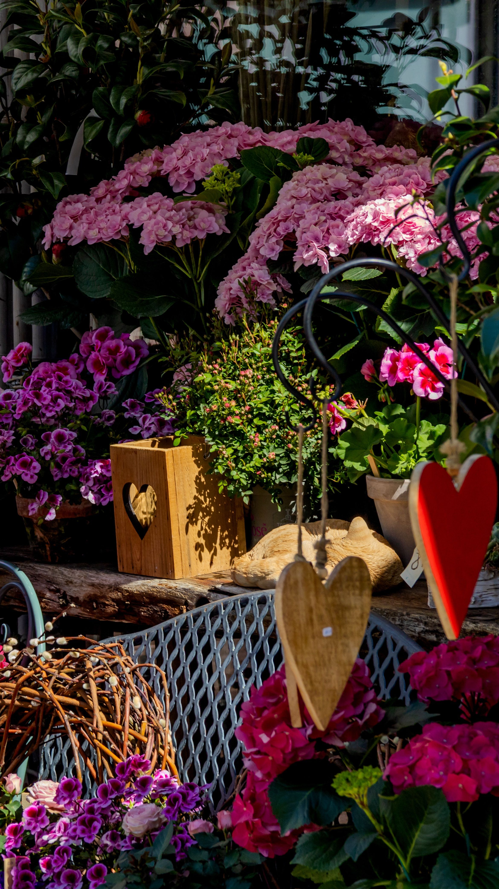

In This Article
- Introduction
- Plan Before You Hang Anything
- Use Art, Prints, and Photographs
- Add Mirrors for Light and Depth
- Use Shelves and Lightweight Solutions
- Decorate With Textiles and Removable Elements
- Use Color Without Major Renovation
- Keep Visual Balance
- Work Safely With Wall Fixings
- Create a Practical Step-by-Step Plan
- Review the Result Before Adding More
- Frequently Asked Questions
- Use Empty Space as Part of the Design
- Use Empty Space as Part of the Design
- Use Empty Space as Part of the Design
- Use Empty Space as Part of the Design
- Use Empty Space as Part of the Design
- Use Empty Space as Part of the Design
- Use Empty Space as Part of the Design
- Conclusion
Introduction
Decorating walls is one of the easiest ways to transform a room without major renovation, dust, or permanent structural changes. Art, photographs, mirrors, lightweight shelves, textiles, removable finishes, and carefully chosen color can add personality while respecting the proportions and everyday use of the space.
Before making changes, observe the entire wall and its relationship with the furniture, windows, lighting, and circulation. A simple plan helps avoid impulsive purchases and makes it easier to choose pieces that genuinely improve the room instead of merely filling empty space.
Plan Before You Hang Anything
Start by measuring the wall and nearby furniture. A composition above a sofa should relate to the sofa's width, while an artwork above a console should have enough visual presence to avoid looking lost. Note the height of switches, outlets, windows, and doors before deciding where anything will go.
Place artwork or frames on the floor first and test several arrangements. Paper templates cut to the exact size of the pieces can be attached temporarily to the wall so you can check height, spacing, and overall scale before making holes.
Take photographs during the planning stage. A photo simplifies the scene and often reveals imbalance more clearly than looking at the wall in person. Review the room during the day and at night because changing light can affect how colors and volumes are perceived.
Use Art, Prints, and Photographs
Frames do not need to be identical. Repeating one finish, color family, or visual theme can connect different pieces while preserving variety. Family photographs, illustrations, posters, and artwork collected over time often create a more personal result than buying a complete matching set only to fill a wall.
Scale is important. One large piece can create a strong focal point, while a gallery arrangement works best when spacing and alignment are deliberate. Avoid hanging pieces so high that they appear disconnected from the furniture below.
For renters or anyone who prefers not to drill, removable adhesive systems can be useful for some weights and wall finishes. Always follow the product instructions, check compatibility with paint, and respect the maximum load. Heavy items still require appropriate mechanical fixing.
Add Mirrors for Light and Depth
Mirrors can reflect light and create a sense of visual depth, but their effect depends on what they reflect. A mirror opposite a bright window may help distribute light, while a mirror facing clutter can simply duplicate the problem.
In an entryway or bedroom, a mirror can also serve a practical purpose. In a living room it may become the main decorative feature. One large mirror often creates more impact than several small ones, although a coordinated group can work when the composition is clear.

Choose frames that relate to the room. Wood can add warmth, metal can create contrast, and frameless designs can feel more discreet. The mirror does not need to match furniture exactly; one shared color, material, or style detail is usually enough.
Safety is essential. Large or heavy mirrors need fixings appropriate for the wall type and total weight. Floor-standing mirrors should be stabilized when there is any risk of tipping, especially in homes with children or pets.
Use Shelves and Lightweight Solutions
Shelves can hold books, small plants, ceramics, and personal objects without occupying floor space. However, a wall covered with shelves can feel heavier than a single low cabinet. Use only the number of shelves you actually need and leave some visual space between groups of objects.
Before installation, identify the wall material and expected load. Masonry, concrete, drywall, and other wall types require different anchors and screws. If you are unsure, seek qualified help rather than improvising a fixing.
Style shelves in layers: some books vertical, others horizontal, one ceramic object, and perhaps a plant suited to the available light. Avoid filling every centimeter. Empty space makes selected objects easier to appreciate.
Narrow picture ledges can be useful when you like changing photographs or prints often. They allow compositions to evolve without creating new holes each time. Keep heavy or fragile items in secure positions away from beds, sofas, and busy routes.
Decorate With Textiles and Removable Elements
Textiles can add color, softness, and scale to a wall without permanent construction. A woven wall hanging, decorative fabric, or lightweight textile panel can work particularly well in bedrooms or living rooms.

Choose materials that can be cleaned and maintained reasonably. Heavy fabrics may trap dust, while very delicate materials can be difficult to keep looking good in busy rooms.
Removable wallpaper or peel-and-stick decorative panels can also change a wall quickly. Test compatibility with the existing paint or finish before covering a large area, especially in rental properties.
Use Color Without Major Renovation
Paint is not the only way to introduce color. Artwork, textiles, mirrors, and accessories can create a strong palette without repainting the entire room.
If painting is possible, one accent wall may be enough. Test samples under natural and artificial light because color can shift considerably throughout the day.
Connect wall color with other parts of the room by repeating one or two tones in cushions, rugs, lamps, or ceramics. This creates continuity without requiring everything to match exactly.
Keep Visual Balance
A decorated wall works best when there is hierarchy. Choose one main focal point and let the other elements support it. If every wall contains an intense color, a gallery, a large mirror, and several full shelves, the room can lose visual calm.
Consider the amount of furniture and pattern already present. A room with a bold rug, dramatic curtains, and strong upholstery may benefit from quieter walls. In a neutral room, the walls can carry more personality.
Repeat small visual cues. A color from a print can appear in a cushion, or the finish of a frame can relate to a lamp. These connections make the room feel intentional without relying on complete matching sets.

Work Safely With Wall Fixings
Decoration should never compromise safety. Heavy items, high shelves, and mirrors require appropriate hardware and installation. Do not rely on decorative adhesive products beyond their rated load.
Before drilling, consider hidden electrical wiring or plumbing. If you are unsure about the wall construction or what may be behind it, consult a qualified professional.
Keep fragile objects away from places where they can fall onto seating, beds, or circulation areas. A decorative solution is only successful when it is also stable and easy to maintain.
Create a Practical Step-by-Step Plan
Make a priority list before shopping. Start with the element that has the greatest effect on the room, such as a main artwork, mirror, or shelf, and then evaluate the result before adding smaller details.
Reuse existing objects whenever possible. Moving artwork from one room to another, repairing an old frame, or grouping pieces differently may solve the problem without increasing the number of items in the home.
Set a budget before buying. One durable, properly scaled piece often adds more value than several small purchases made without a plan.
Review the Result Before Adding More
Once the main changes are in place, use the room normally for several days. Observe cleaning, circulation, comfort, and how the wall looks in different lighting. A composition that works in a photograph may feel very different in daily life.
Temporarily remove any item that creates doubt. If the room feels better without it, that object may not be necessary. Editing is part of decorating and often improves the result more than adding another piece.
Keep a note of paint colors, measurements, hardware, or product names used. This information can be helpful if you need to replace, repair, or expand the arrangement later.
Frequently Asked Questions
What is the best way to start decorating a wall?
Measure and observe the entire wall before buying anything. Define the focal point and test the composition with paper templates or temporary arrangements.
Can I decorate walls without drilling?
Yes, depending on the weight and wall surface. Removable adhesive systems, textile hangings, and some lightweight solutions may work, but always follow load and compatibility instructions.
How many pieces should I place on one wall?
There is no fixed number. Use enough to create a clear composition while leaving visible space around the main elements.
Are mirrors always useful in small rooms?
They can help when they reflect light or an attractive view, but their location matters. A poorly positioned mirror may simply duplicate clutter.
Use Empty Space as Part of the Design
Not every section of wall needs decoration. Leaving some areas empty can make the pieces you do choose feel stronger and more intentional. This is especially important in rooms that already contain patterned textiles, large furniture, or strong color.
Empty wall space can also make future changes easier. You can add or rotate objects later without rebuilding the entire composition.
Use Empty Space as Part of the Design
Not every section of wall needs decoration. Leaving some areas empty can make the pieces you do choose feel stronger and more intentional. This is especially important in rooms that already contain patterned textiles, large furniture, or strong color.
Empty wall space can also make future changes easier. You can add or rotate objects later without rebuilding the entire composition.
Use Empty Space as Part of the Design
Not every section of wall needs decoration. Leaving some areas empty can make the pieces you do choose feel stronger and more intentional. This is especially important in rooms that already contain patterned textiles, large furniture, or strong color.
Empty wall space can also make future changes easier. You can add or rotate objects later without rebuilding the entire composition.
Use Empty Space as Part of the Design
Not every section of wall needs decoration. Leaving some areas empty can make the pieces you do choose feel stronger and more intentional. This is especially important in rooms that already contain patterned textiles, large furniture, or strong color.
Empty wall space can also make future changes easier. You can add or rotate objects later without rebuilding the entire composition.
Use Empty Space as Part of the Design
Not every section of wall needs decoration. Leaving some areas empty can make the pieces you do choose feel stronger and more intentional. This is especially important in rooms that already contain patterned textiles, large furniture, or strong color.
Empty wall space can also make future changes easier. You can add or rotate objects later without rebuilding the entire composition.
Use Empty Space as Part of the Design
Not every section of wall needs decoration. Leaving some areas empty can make the pieces you do choose feel stronger and more intentional. This is especially important in rooms that already contain patterned textiles, large furniture, or strong color.
Empty wall space can also make future changes easier. You can add or rotate objects later without rebuilding the entire composition.
Use Empty Space as Part of the Design
Not every section of wall needs decoration. Leaving some areas empty can make the pieces you do choose feel stronger and more intentional. This is especially important in rooms that already contain patterned textiles, large furniture, or strong color.
Empty wall space can also make future changes easier. You can add or rotate objects later without rebuilding the entire composition.
Conclusion
Decorating walls without renovation is mainly about proportion, planning, and editing. Measure first, choose one clear focal point, use art, mirrors, shelves, textiles, or color according to the room, and install everything safely.
There is no need to complete every wall at once. Work gradually, observe the result in daily use, and remove anything that creates unnecessary visual weight. A successful wall feels personal, balanced, and easy to maintain.